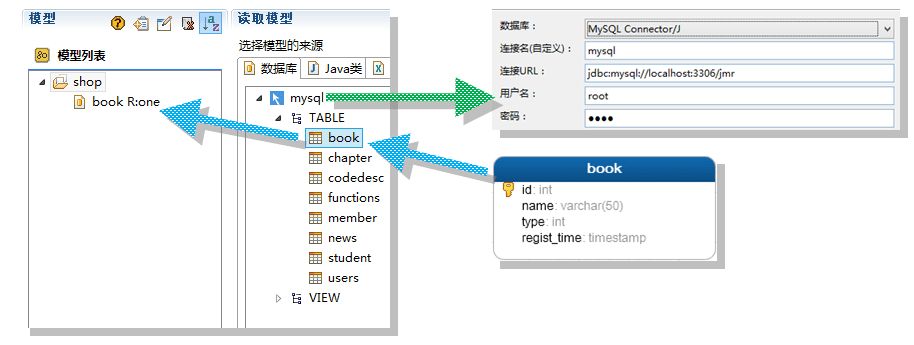
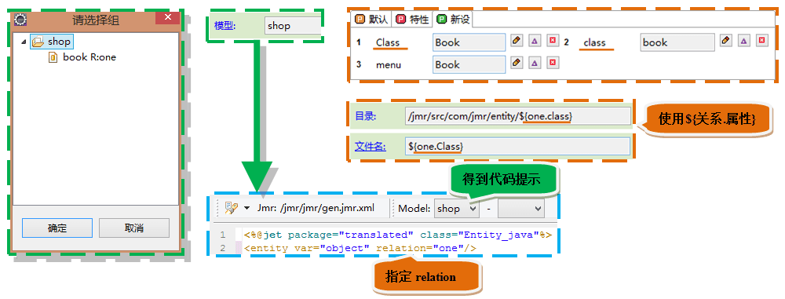
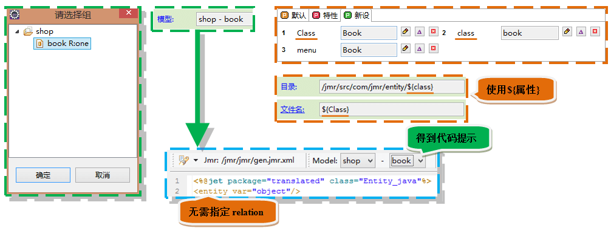
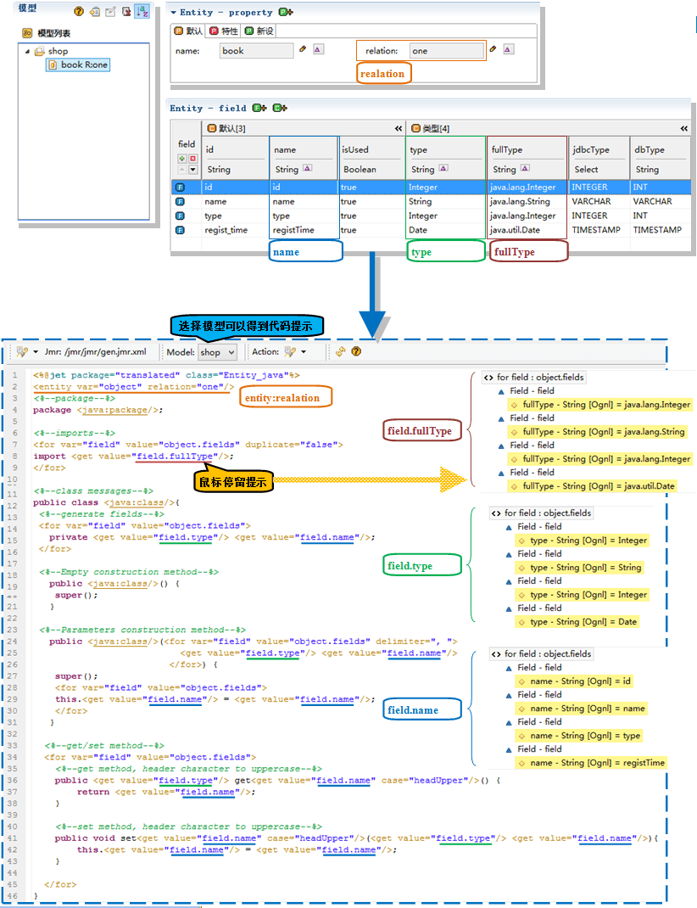
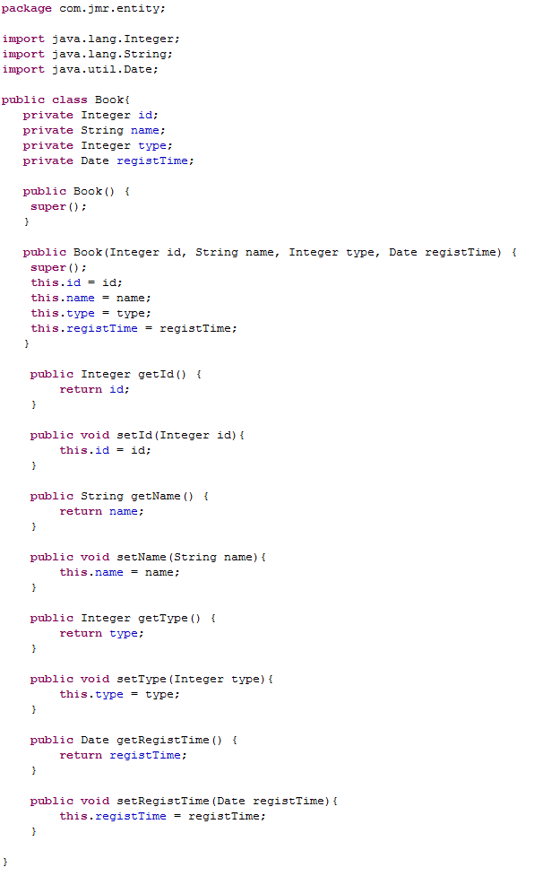

模型
Jmr的模型是从数据库、Xml等转换而来的。模型不仅存储着表的信息，我们还可以扩展模型的结构，添加我们需要的属性，以便不同代码模块的生成。
模型的来源
我们可以通过配置，连接几乎所有的数据库。
表或者视图可以转换成模型，模型保存在Jmr文件中，可以被任务使用。

模型的设置
有2种方式设置模型：
- 选择模型组（如shop）：<entity>中需要指定relation。这种选法一般应用于模板中需要得到多个模型，比如many-to-one many-to-many等情况。

- 选择模型（如book）：<entity>中无需指定relation，这种方法用于模板只需要单个模型。当然，这种方式也可以指定relation。

模型的使用
以一个Java实体类的生成为例子，模型在模版中被调用的方法如下：
- 使用entity标签，指定relation得到对应模型，并设置成一个变量，如下的object。
- 使用for标签遍历object的字段集fields，可以生成import导入、类的成员变量，类的构造方法、get/set方法等。
注意：在模板中可以选择模型，写代码可以得到完整的提示。将鼠标放在属性上还可以看到详细的结构信息，开发者可以方便的编写模板，查看详细的变量值。

生成的实体类代码。

内容
- 转换：您将了解如何转换生成数据库、Java类、Xml模型。
- 结构：您将了解模各模型的结构和如何增删改这些结构。
- 预设：您将了解转换模型时，将预设信息设置入模型，减少您的工作量。